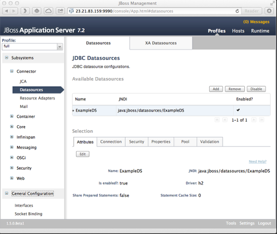
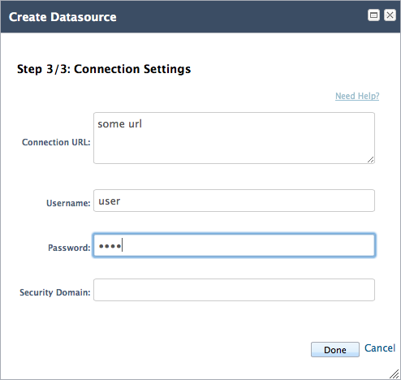
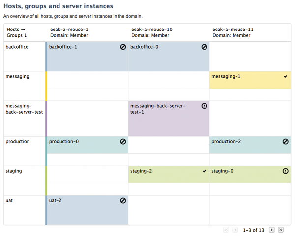

AS7 Web Console

Minimal
It doesn't get in your way.

Unobtrusive
No bells and whistles.

Simple
Straightforward and self-explanatory.

Practical
Serves real needs.
Server Configuration
Configure subsystems and general server attributes. Supports a wide range of subsystems and components out-of-the-box
Runtime Status
Inspect and monitor services and appplications at runtime. The most important performance indicators at a glance.
Deployments
Easily deploy and maintain applications. Manage components on standalone servers or across large domains.
Domain & Standalone
Works for both standalone servers and managed domains. No installation hassle. Just fire up your web browser.
Localization & Accessibility
Fully localized and follows standard accessability guidelines. Supporting W3C Aria standards.